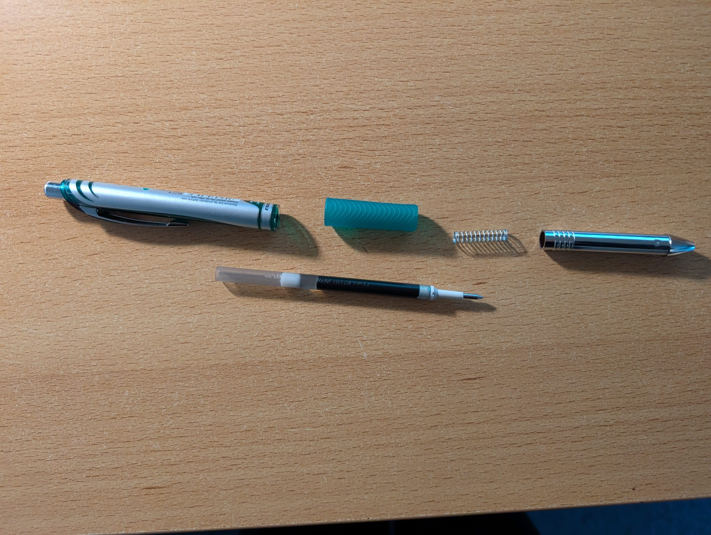
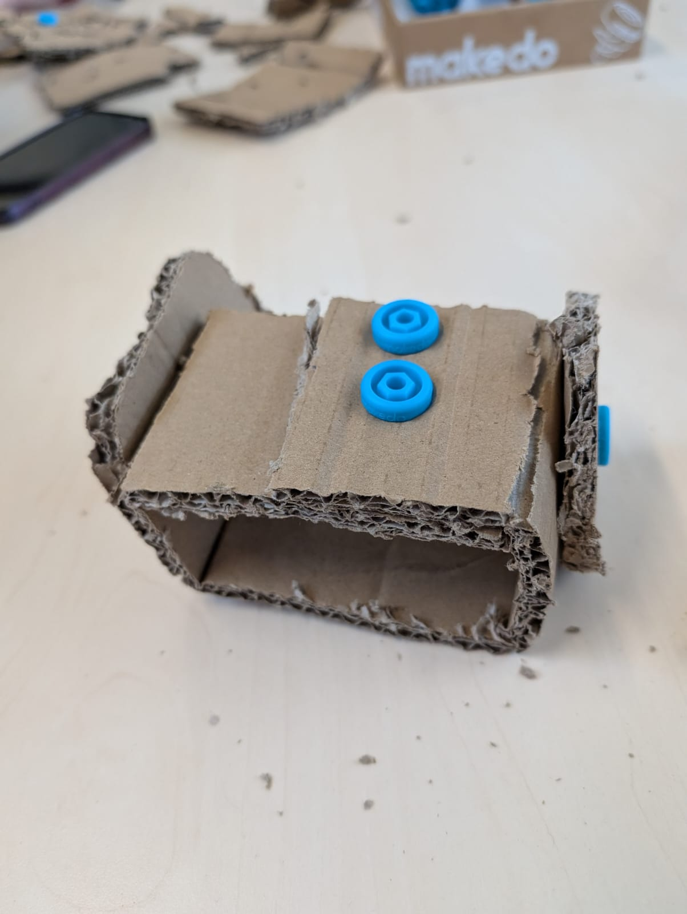
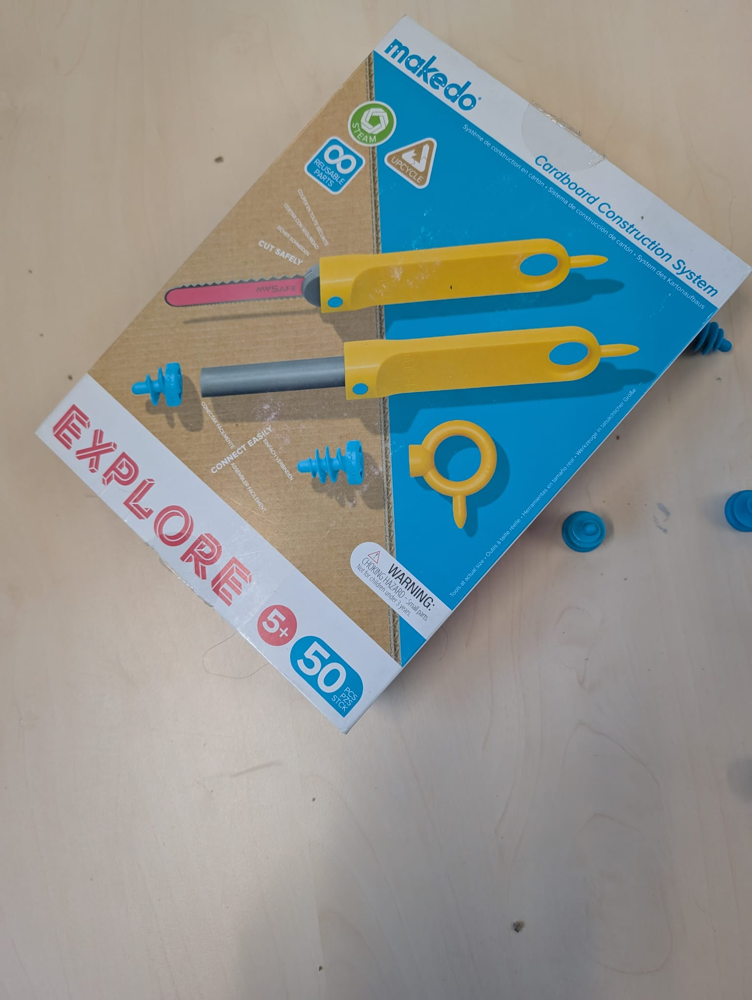
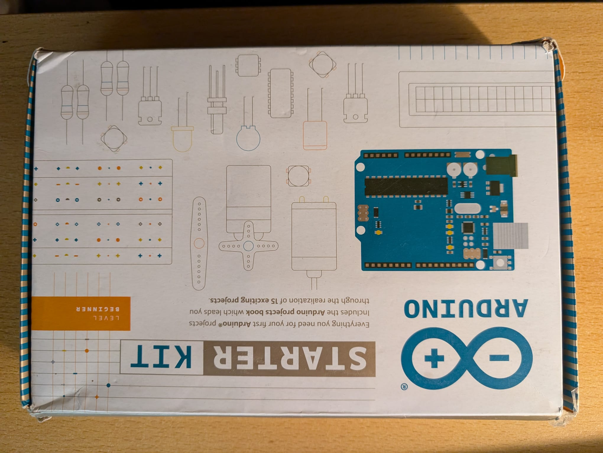

Reflections
Week 1
Tinkering is widely associated with trial-and-error and brainstorming. Find dictionary definitions of the three techniques, and compare them. Does the definition of tinkering match the definition we have in the course? Also, ask a generative AI tool for the definitions and differences. Which aspects does the answer provided miss?
The definitions of trial error and brainstorming from chat GPT are:
Trial: To experiment/test an idea KNOWING what the outcome will be.
Error: A mistake (often from the outcomes of trial) that something didn’t go as planned and is often a chance to learn.
Brainstorming: A creative process where you come up with lots of ideas often and quickly. This is often used to spark innovation and done in a group or solo.
From the definition of Learn about Tinkering, tinkering is to make small changes in order to improve or repair something (in an unfocused way) and the definition of tinkerer is someone who enjoys experimenting with materials and ideas to fully understand their capabilities and further iterates on their learning. I would like to expand it and say that tinkering is ‘breaking’ something knowing that you can easily put it back together. It is through this ‘breaking’ of something that we truly understand how something works. A niche example would be my pens. I love EnerGel pens and would often take my fathers. Most of the time the EnerGel pens he used were not working properly by the time I ‘inherited’ them. I ended up taking the pens apart to try and figure out why they were not working the way they should. I learned how to disassemble and assemble them and even went as far as ‘diagnosing’ the problem of a pen when I tried to use it. If the pen tip was not retracting properly then it was a problem wit the spring mechanism. If the pen shell could not close tightly when refilling the ink then it suggested a crack which loosened the internal threads. If the pen was not dispensing ink when the ink cartridge was full then there was a pressure issue with the ink cartridge.
From the definitions of AI and Learn about Tinkering the definition of how we define tinkering is pretty close to the definiton that is outlined in the sessions. Execpt there is one small correction with Chatgpt's definition of trial. Which was 'Knowing' the outcome of something. Sometimes the act of 'trial and error' is not knowing the outcome of something and hopiing that it will work when a tiny change has been made.
Can you take a typical I-Tech related project case, list and explain 5 technical hurdles? To which extent do they allow for a 'playful' approach in tackling them? Please give arguments.
Interactive technology are where users communicate through technology through a user interface. Applying this logic to my own background (robotics), the robot must be able to communicate with or receive input from the physical environment and make a decision based on the request from the user. In robotics, technical hurdles can be split into hardware, software, environmental and user interface parts. A user request is received, the robot processes it and gives an output based on environmental factors. The hardware has to interact with the user as well as monitor the physical environment around it. The collected data is then processed by the software and the software has to make a decision based on the input of the user as well the physical environment.
Some technical hurdles that can be observed are unreliable input from the hardware, the making of the logic behind the ‘decision’ making in the software and integrating both aspects to work correctly. A robot then also has to meet a set of requirements such as safety, and user friendliness. This can be considered a technical hurdle depending on the target audience and what the robot is used for (its application). The hardware aspect of the tinkering approach can be seen as rather limited if using 1 electronic component. However when using multiple electronic components they allow for a greater amount of tinkerability. When looking at the software aspect in terms of tinkerability, it is limited to learning the ins and outs of programming language that is used so there is not much room for tinkerability. That being said, there can be a way to increase the tinkerability in terms of software and that is if two languages are used when designing something. This would be for very complex systems.
Where would you go hunting for tinkerspiration? List 5 physical and 5 online resources valuable for an I-Tech specialist. In which did you already find inspiration for a project you did or that got on your bucket list?
My absolute favourite ‘hunting ground’ for tinkerability are movies, books, art and nature. Growing up I watched a lot of fantasy/ action movies such as Iron Man, Harry Potter, Spiderman and The chronicles of Narnia. My interest developed further and I began to watch anime such as Avatar The Last Airbender, Death Note, Attack on Titan and Full Metal Alchemist Brotherhood. I also read a lot of fantasy books such as The Hunger games, The night circus, Six of crows and was fascinated with Greek and Egyptian mythologies. All of these movies and books have something to offer in terms of creativity. Whenever I am watching movies about cyborgs or reading about witches and wizards I always think to myself if it is possible to make it a reality and if it is feasible. More often than not it is largely impossible, however some elements of the main characters super powers CAN be physically made and applied in slightly different ways. Nature is also one of my most visited hunting ground for tinkering. In biology class, I learned about how different animals in different environments have special adaptations which make them unique and have a certain edge over other animals. My background in my bachelors is in mechanical engineering so I often had to think of how something would be adapted to behave a certain way and fused it with nature. Like how drones or planes are an imitation of birds in flight, or trains mimicking snake like movements and cranes copying a giraffe’s long neck to reach new heights. Another resource that I go to online which are helpful for inspiration is Pinterest and Instructables.
List 5 domains, challenges or settings in which you would like to apply tinkering, and explain why. Can you identify some sweet spots, (perhaps beyond the well-known such as STEM education) and can you also define some limitations? Are there 'untinkerable' domains?
The domain I would like to apply to tinkering is in food. I have began cooking from a young age and really enjoy experimenting with different ingredients and spices to create something new. Tinkering in food can be seen as swapping different ingredients out with new ones for the same recipe and seeing how it would affect taste or texture and appearance. This is also helpful since people have different dietary restrictions such as allergies or intolerances. So a challenge could be to tinker with a beef stew recipe to make it vegan without compromising on texture of the beef. Or make a Thai green curry without using coriander without compromising on taste so it can be fed to someone with ‘the soap gene’.
Another domain I would like to apply tinkering is in textiles. What comes to mind is Dr Strange’s cloak that follows him everywhere or Black Panther’s suit that stores the kinetic energy when being punched or Katniss Everdeen’s dress from the hunger games when she twirls and her dress catches fire to reveal a prettier dress. A realistic challenge that could be done is to tinker with textiles and by making a lightweight sweater that can be used in extreme conditions such as snow where the wearer does not put on additional layers. Or using the knowledge acquired from colour theory make a piece of purple clothing only from cloths that are coloured in the primary colours. Or Make a piece of clothing that turns neon pink under UV light. (Like how white pieces of clothing turn a shade of blue).
The last domain I could see tinkering being applied to is wearable devices and this can easily be merged with electronics. What comes to mind is Inspector Gadget. Glasses and watches are such common wearable devices that could be a tinker domain when coupled with electronics. A challenge could be to make a pair of glasses that automatically light up near the edges when it gets dark so you are able to see in darkness. I do not think there are untinkerable domains. It is all a matter of perspective and what aspect someone decides to tinker in.
Week 2
To which extent does the exact instruction play a role? Do you need an introduction in the materials(seed) or towards the goal (discovery) or the tooling/skills?
With the materials displayed in session 2. Some of them were starter kits while other kits such as make do and Lego bricks were intuitive and easy to comprehend. The extent in which exact instruction plays would be when a kit has some complexity involved and is targeted to a different audience that aims at increasing the depth at of their tinkering knowledge. It could then be loosely correlated to reusability. Comparing the make do kit with an Arduino starter kit, the make do kit is simple and incitive to use with minimal to no instruction. It is limited in its functionalities and cannot be easily reusable when it comes to different tinkering domains. The Arduino starter kit has electronic components which are reusable for different projects and its functionalities are larger than make do’s. It had some guided instructions which compared to make do’s. The target audience for either kit is different and that plays a role in the extent of exact instruction provided.
  Week 3
Do adults need a different approach or role in facilitation? Which concepts are relevant?
The process of facilitation in meetings and processes is to ensure they run optimally and give the best possible results for all group members involved. The LEGO serious play perfectly describes a concept as helping participants express themselves. Relaying it back to tinkering and how it is meant to foster creativity, which can be seen as an expression of oneself (through domains like art and writing). Adults would need a different approach when it comes to facilitation as they have more complex ideas, thought processes and various weaknesses they are looking to improve compared to children. The relevant concepts are therefore understanding the role of the facilitator and the challenge while also encouraging reflection and dialog.
What is a fundamental difference in Papert and Montessori’s approach in Invent to Learn? How well do their mantra's and thoughts on teaching translate to tinkering for 'children of different ages'?
Chapter 5 emphasises the importance of creating an educational safe space that fosters creativity and hands on learning. Papert believes that children best learn when they are building stuff that is seen as meaningful to them, while Montessori primarily focuses more on how physical environments shape how children learn by providing a sensory experience via constant exposure. Papert’s mantra is ‘hard fun’ where children enjoy working through a challenging problem they care about where there is room for experimentation and iteration. Montessori’s mantra is ‘follow the child’ where the child’s readiness is observed and learning experiences are then tailored to the interests of the child. Looking back on my childhood, I was got bored very quickly and was not engaged at school if I did not find it interesting. The class I looked forward to the most was art because I could freely express what I was feeling though a medium such as painting or drawing. Art class became synonymous with my educational safe space free of expectation which was were creativity bloomed. Montessori’s mantra thus translates well for younger children as it provided me with a sense of skills that I readily wanted to learn. Both mantras have similarities in that they remove the pressure of failing for children which makes them more adventurous and willing to learn. Their aligned beliefs also extend to how children learn which is by hands exploration and self discovery.
Where in a process do you use tinkering?
Tinkering normally happens during the prototyping stage of a creative problem solving process because that is the most ‘hands on’ stage where trial an error truly happens. The prototyping stage gives a chance to refine the idea by testing it out physically. And the best place to do that is a workshop or lab where access to tools and equipment is easy. I would therefore need a design lab to not only spark my creativity but also get new perspectives on how to solve problems to technical hurdles I am facing from people who are already tinkering.
How can you translate a design problem or research problem into a tinkering playground?
For converting a design problem into a tinkering playground the process i follow is simplistic and iterative. I convert the research problem into a mind map first to see most of the possible avenues I could frame the problem and what I would like to focus on. This would give me a rough idea of what to design and how to design it. I then acquire lacking knowledge and try to apply it to my specific problem (or domain). After completing this cycle for about 2 iterations I then draw out a diagram of the design depicting the processes and what I would like each aspect to do. I then start prototyping the design.
What can you use to get unstuck?
When someone is stuck in something it implies they have exhausted all other avenues to reach a solution. I find that talking about the problem with like minded people helps get outside of your head and allows a fresh perspective on the issue. Seeing the problem from a new view can often change how a solution is sought. I tend to talk to other like minded people about the issue I am facing and it is always refreshing to see the problem through someone else’s eyes because its sparks a new wave of creativity.
How do you get in the flow?
Maintaining a healthy workflow is critical in tinkering. It can easily turn into boredom for doing repetitive stuff and/or frustration when something is not going well and has been for some time. In order to do that I tend to take breathers and let the problem ‘marinate’ before starting again. This helps me not get too discouraged from continuing as well as let me passively think about how I could approach the problem the next time I come back to it when I am in a better mindset.